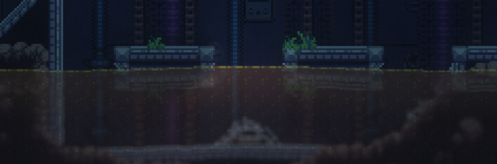

After looking through the avaliable games I decided to play ZORDAK. ZORDAK is first and
formost a 2D action adventure game, a more niche name for this genre would be a
"Metroidvania." This game wears its inspiration on its sleeve, that being the Super
Nintendo game: Super Metroid. The game's protagonist and setting are similar, the basic
gameplay formula is similar, and even smaller details are directly lifted from Super
Metroid.
Story
The story of ZORDAK isn't too complex. The game has an opening cutscene that shows the
titular planet Zordak. The planet Zordak. The main character (who's name I do not know, I don't think it is stated within
the demo) is sent to discover an anomaly on the planet. She appears to be cryogenically
frozen or put in some sort of statis. It is stated that the mission should take roughly 3
years, but something goes wrong and the game cuts to 200 years later where our protagonist
wakes up. From there the player is put through a brief tutorial before that's topped off by
an escape sequence. Escape sequence. After that the player is then set off to explore the planet. That's really all the
story the demo gives at the moment, which I don't think is too big of an issue because I
assume more will be added in the full game. The main character of Zordak.
Gameplay
ZORDAK's protagonist clearly takes inspiration from Samus Aran from Metroid. You play as
a blonde female who eventually aquires a form of power suit that can shoot beams. The Geo Suit firing energy beams. The general gameplay loop also follows that of a Metroid game. You platform around
different parts of the planet in search of various upgrades that you use to clear your path
forward. There are various enemies you face along the way, and this is where I believe the
game is most derivative of Super Metroid. The large majority of the enemies faced in ZORDAK
are very similar to ones from Metroid. Flying enemies that drop projectiles downwards,
crawling enemies that cling to surfaces and deal damage on contact, and enemies that hang
from the ceiling to swoop down on the player. This enemy shares many similarities with "Geemers" from the Metroid
series. I think the game would benefit from some more creative enemy types, I personally
enjoyed the strange eletric plant that emit sparks in a large radius that blocked your path,
they seemed quite unique. Electric plant enemy blocking the way forward.
The most important part of ZORDAK is exploration and puzzle solving. The most common
puzzle would be breakable tiles that cause a chain reaction that open a path forward. My
favorite puzzle from the demo involved finding a code hidden behind a crack in the wall
(the code also seemed to be randomly generated, as in a second playthrough the code had
changed). Randomly generated code hidden behind a wall. Once the player has the code they enter it into a keypad and use a battery found
in a nearby area to aquire the game's power suit. Code entry pad. Overall the exploration was fun but won't be for everyone, I feel that if this was
someone's first Metroidvania they could easily get lost and end up quitting.
The last bit
of gameplay I want to mention is the demo's final boss fight. Throughout the demo you
will spot strange blobs hanging from the ceiling and the walls. The deeper you venture
the more goo you'll see. Strange purple goo. Eventually it leads to a room where a large liquid creature named "Slither"
appears. Slither, the demo's final battle. For a first fight it's pretty simple and effective. The boss has 3 large eyeballs
that act as weakpoint and can shoot projectiles at the player. These eyeballs can be
destroyed to make the fight simpler. The boss will jump in and out of pits of goo to attack
the player and every once and a while the boss will hide and a swarm of bugs will fly from
the ceiling that the player can kill for energy to restore health. For a first boss I think
the theme was unique and the way you fight it was fun and engaging. The only complaint I
really heve is that the boss healthbar is listed as a number and a bar, when I think just
having a basic healthbar would make the fight simpler and clearn the UI a bit.
Presentation
The game's visuals are very well done. The game uses modern graphical techniques combined
with 2D sprite art. The lighting especially is very well done. The little detials really
sell the environment, like the grass blowing in the wind and the sparks flying from
broken technology. The reflections in the water and other liquids was also very
impressive.

Reflections seen in a pool of acid. The most comparable graphical style I can compare this game to is another
metroidvania named Carrion.
I don't have much to say about the game's music. Nothing was
too memorable, but I think that works in the game's favor. You're all alone on this
foreign world and the subtle music helps elevate that feeling of isolation. I personally
enjoyed the music for the overgrown laboratory area.
Lastly I think the game's UI was well done. It takes clear inspiration from Super Metroid
with the energy counter and upgrades. The UI. The minimap was a nice touch to help navigate as well. The full map. A small detail I enjoyed was that the UI was hidden until the protagonist put on a
helmet which activated the HUD.
Closing Thoughts
Overall I enjoyed ZORDAK. I think the basic gameplay loop is very well done, if a bit
derivative. That's probably my biggest issue with the game so far. Everything it does is
very similar to Super Metroid. It's clear that's what the developer wanted, but I hope
that the final product has a few more unique mechanics or upgrades to set itself apart.
I think the boss fight was very enjoyable so I hope to see more interesting fights in
the full game. I have very little negative things to say about the game's visuals
beacuse they are just that well done. I look forward to seeing more of this game in the
future.